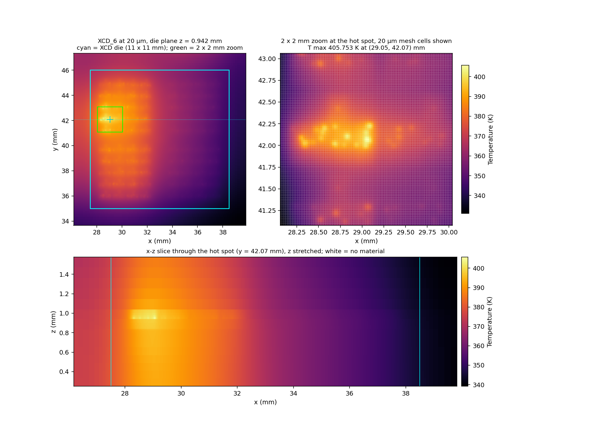
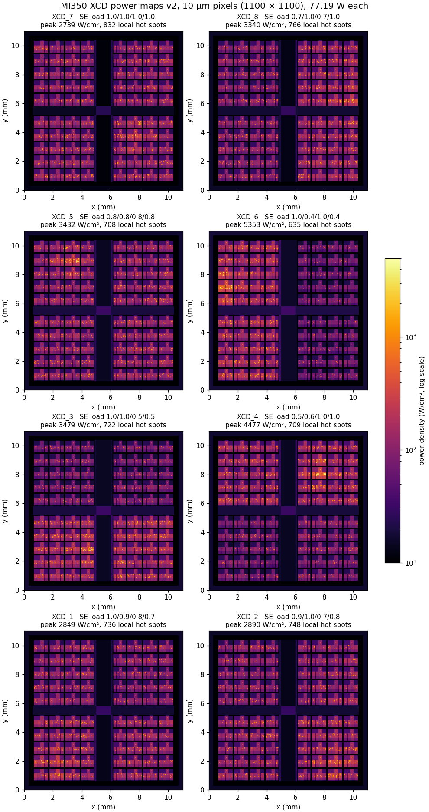

Resolution on demand: micrometre-scale hot spots on a full accelerator package
ThermStack APR keeps the whole package in the model and resolves the hot spots at the resolution you ask for, on one CPU server.
GPU power maps now carry hot spots of 20–60 µm, on packages 50–60 mm across. ThermStack APR (Adaptive Physical Reasoning) resolves them on demand. On an AMD MI350-inspired package with synthetic 10 µm GPU power maps, APR resolves all eight compute dies at 20 µm in 56 minutes and 106 GB of memory, on one CPU server.
20 µm on every compute die, on one server
The whole package stays in the model; fine resolution goes where the hot spots are. The modeled package is 54 × 62 mm with eight compute dies (XCDs) at 950 W. A uniform 20 µm grid of the whole package would need an estimated 15 TB of memory. ThermStack APR reaches 20 µm on all eight XCDs within the memory of a single CPU server.


Synthetic 10 µm GPU power maps
Each XCD carries its own floorplan-style power map at 10 µm (1,100 × 1,100 pixels): compute-unit arrays, an I/O and cache spine, and 635–832 local hot spots of 20–60 µm, at up to 5,353 W/cm². Package geometry, materials and cooling are those of the WP-102 model.


MI350-inspired model with synthetic power maps, not AMD data. Steady state. Wall time and memory from one 2026 CPU server; they will differ on other hardware. AMD, Instinct and MI350 are trademarks of Advanced Micro Devices, Inc. NoveetyAI is not affiliated with, endorsed by, or sponsored by AMD, and this material was not produced in cooperation with AMD.